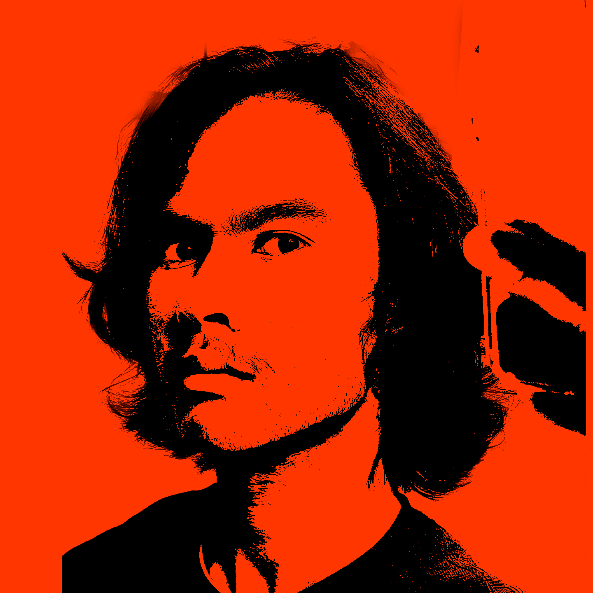

Taro Arthur d'Aronville is a British-Japanese creative currently based in Los Angeles, CA, pursuing a Media Arts + Practice BA degree at the USC School of Cinematic Arts.
Much of Taro's work lies at the intersection of media, culture, and business, where he intends to use large-scale artistic platforms to champion a philosophy of good for all. His interests include new cinema, creating an equitable music business landscape, artistic education, and Japanese moral philosophy.